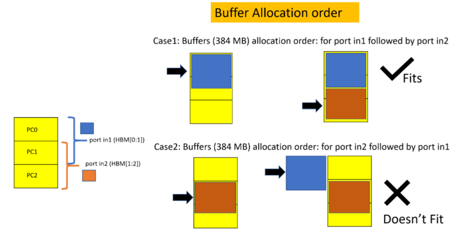

ハードウェア アクセラレーション チュートリアルxilinx.com の Vitis™ 開発環境を参照 |
アプリケーションの概要¶
このチュートリアルでは、DDR ベースのインプリメンテーションの単純なベクター加算例を使用します。in1 および in2 ポートは、それぞれ DDR バンク 0 および 1 から読み出し、out ポートは DDR バンク 2 に結果を書き込みます。このチュートリアルでは HBM に移行するのに必要な既存のアプリケーションの変更について説明します。
DDR の使用¶
カーネル コードは、次の関数シグネチャを持つ単純なベクター加算です。
void vadd(
const unsigned int *in1, // Read-Only Vector 1
const unsigned int *in2, // Read-Only Vector 2
unsigned int *out, // Output Result
int dsize, // Size in integer
const unsigned int kernel_loop, // Running the same kernel operations kernel_loop times
bool addRandom // Address Pattern is random
)
in1 および in2: AXI インターフェイスを介した DDR からのストリーミングデータの入力。
out: AXI インターフェイスを介して DDR に書き込まれるベクトル加算のストリーミング出力結果の出力。
dsize: DDR にアクセスするカーネル ポートからのメモリ アクセスのサイズを設定。
kernel_loop: メモリへのアクセスにビジー状態を維持するためにカーネル操作が呼び出される回数。
addRandom: 1 に設定されていると、ランダム アクセスをイネーブルにします。
カーネル ソース コードの詳細は、<Project>/reference_files/kernel.cpp を参照してください。
ポートから DDR バンクへの接続は、--sp システム ポート マッピング オプションを使用して構築されます。このオプションを使用すると、開発者はカーネル ポートを特定のグローバル メモリ バンクにマップできます。
詳細は、『Vitis アプリケーション アクセラレーション開発フロー』の「カーネル ポートのメモリへのマップ」を参照してください。
DDR_connectivity.cfg 接続ファイルの内容を次に示します。makefile ターゲットは、このファイルを自動的に作成します。
[connectivity]
sp=vadd_1.in1:DDR[0]
sp=vadd_1.in2:DDR[1]
sp=vadd_1.out:DDR[2]
ホスト コードは、DDR0、DDRR1、および DDR2 にそれぞれ 1 つずつ、3 つのバッファーを作成します。<Project>/reference_files/host.cpp で使用可能なホストコードを参照してください。各バッファーは、16 GB の容量を持つ 1 つの DDR バンクに接続されます。これは、このアプリケーションで使用されるバッファー サイズよりも大きくなります。Linux カーネルの制限により、最大 4 GB まで移行できるはずです。
次のコードは、vector_size_bytes サイズの 3 つのバッファーを作成します。
134 : cl::Buffer(context,CL_MEM_USE_HOST_PTR | CL_MEM_READ_ONLY, vector_size_bytes, &source_in1[total_data_size]);
135 : cl::Buffer(context,CL_MEM_USE_HOST_PTR | CL_MEM_READ_ONLY, vector_size_bytes, &source_in2[total_data_size]);
136 : cl::Buffer(context,CL_MEM_USE_HOST_PTR | CL_MEM_WRITE_ONLY, vector_size_bytes, &source_hw_results[total_data_size]);
140 : krnl_vector_add.setArg(1, buffer_in2[j]));
141 : krnl_vector_add.setArg(0, buffer_in1[j]));
142 : krnl_vector_add.setArg(2, buffer_output[j]));
カーネル ソース コードの詳細は、<Project>/reference_files/host.cpp を参照してください。
DDR を使用したアプリケーションの実行¶
600 MB のサイズの順次アドレス パターンの DDR を使用してハードウェア アプリケーションを実行し、カーネルを一度エンキューしてみましょう。ホストは、600 MB を DDR0 (buffer_in1) および DDR1(buffer_in2) に移行します。カーネルは計算を実行し、結果を DDR2 の buffer_output に格納します。
実行する makefile コマンドは、次のとおりです。
#make ddr_addSeq_build - executed already in first module. make ddr_addSeq上記の run コマンドは、基本的に次のように説明できます。
make run TARGET=hw memtype=DDR dsize=600 addrndm=0 krnl_loop=1 buildxclbin=0
memtype は、メモリを DDR または HBM として設定します。
dsize は、ホストからメモリ バンクに移行され、カーネル ポート in1 および in2 によってアクセスされるデータの量です。
kernel_loop はカーネル ループが繰り返される回数を設定します。
buildxclbin=0 は新しい xclbin を生成しません。
txSize は、デフォルトで 64 に設定されます。これは、メモリにアクセスしているときにカーネル ポートから発行されるトランザクションのサイズです。
make コマンドは、../build/DDR_Banks_d512_txSize64 のような build ディレクトリを生成します。
TARGET=hw_emu はハードウェア エミュレーションの実行にも使用できますが、600 MB サイズのバッファー用にアプリケーションを実行するには時間がかかります。このため、アプリケーションは TARGET=hw を使用してハードウェア上で実行されます。
ハードウェア上でアプリケーションを実行する上記のコマンドは、次の結果を表示します。
*** Running hw mode *** Use Command Line to run application!
cd ./../build/DDR_Banks_d512_txSize64 && ./host vadd_hw.xclbin 600 0 1 64;
Total Data of 600.000 Mbytes to be written to global memory from host
Kernel is invoked 1 time and repeats itself 1 times
Found Platform
Platform Name: Xilinx
DEVICE xilinx_u200_gen3x16_xdma_2_202110_1
INFO: Reading vadd_hw.xclbin
Loading: 'vadd_hw.xclbin'
- host loop iteration #0 of 1 total iterations
kernel_time_in_sec = 0.0416315
Duration using events profiling: 41473086 ns
match_count = 157286400 mismatch_count = 0 total_data_size = 157286400
Throughput Achieved = 15.17 GB/s
TEST PASSED
ホストは 600 MB のデータを DDR0 と DDR1 の両方に移行しています。カーネルは、それぞれ DDR0 および DDR1 からの in1、in2 ポートを使用してこのデータにアクセスします。ベクター加算はカーネルによって実行され、結果は DDR2 に書き込まれます。DDR2 の結果はホストに移行し戻されます。次のセクションでは、この DDR ベースのアプリケーションを HBM に移行するために必要な手順について説明します。
HBM への移行¶
ホスト コードとカーネル コードは、DDR が使用されているか、HBM が使用されているか、PLRAM が使用されているかにかかわらず、使用されているメモリ タイプに依存しません。ここで変更する必要があるのは、接続ファイルだけです。
Vitis フローにより、-sp オプションを使用してメモリ接続を簡単に切り替えることができます。この場合は、DDR を HBM に置き換える必要があります。各 HBM バンクの容量は 256 MB です。当社のアプリケーションでは 600 MB のデータを追加する必要があるため、3 つの HBM バンクを連続したメモリとして使用する必要があります。Vitis フローでこれを実行するには、次の接続ファイルに示されているようにメモリをグループ分けします。
HBM を使用したアプリケーションの実行¶
ここでは、次の 3 つを試してみます。
2 つの HBM PC からカーネル ポート in1 および in2 を読み出します。ホストは 512 MB のデータを HBM に送信します。
2 つの HBM PC からカーネル ポート、in1 および in2 を読み出します。ホストは 512 MB を超えるデータを送信します。512 MB を超えるアクセスをしているので、このコンフィギュレーションではアプリケーション エラーが発生します。
カーネル ポート in1 および in2 は同じ HBM PC を共有します。
接続ファイル HBM_connectivity.cfg 例の内容を次に示します。makefile ターゲットは、banks 引数に基づいてこのファイルを自動的に作成します。
[connectivity]
sp=vadd_1.in1:HBM[0:1]
sp=vadd_1.in2:HBM[2:3]
sp=vadd_1.out:HBM[4:5]
次のコマンドを実行して、in1、in2、および out ポート用にサイズ 512 MB の HBM メモリを含むアプリケーションを使用します。
#make hbm_addSeq_2Banks_build - executed already in first module.
make hbm_addSeq_2Banks
上記のコマンドは、次と同じです。
make run TARGET=hw memtype=HBM banks=0_1 dsize=512 buildxclbin=0
dsize=512 は、カーネル ポート in1 および in2 によって HBM からアクセスされるデータ サイズを設定します。
banks=0_1 は、適切な builddir, ../build/HBM_2Banks_d512_txSize64 に上記の内容を含む HBM_connectivity.cfg ファイルを作成します
cd ./../build/HBM_addSeq_2Banks_d512_txSize64 && ./host vadd_hw.xclbin 512 0 1 64;
Total Data of 512.000 Mbytes to be written to global memory from host
The kernel is invoked 1 time and repeats itself one time
Found Platform
Platform Name: Xilinx
DEVICE xilinx_u50_gen3x16_xdma_201920_3
INFO: Reading vadd_hw.xclbin
Loading: 'vadd_hw.xclbin'
- host loop iteration #0 of 1 total iterations
kernel_time_in_sec = 0.0413112
Duration using events profiling: 41136148 ns
match_count = 134217728 mismatch_count = 0 total_data_size = 134217728
Throughput Achieved = 13.0511 GB/s
TEST PASSED
ホストが 512 MB 以上のデータを転送すると、アプリケーションで次のエラーが発生します。
次のコマンドを実行します。
make run TARGET=hw memtype=HBM banks=0_1 dsize=600
次に示すように、アプリケーションが実行されるとエラーになります。
cd ./../build/HBM_addSeq_2Banks_d512_txSize64 && ./host vadd_hw.xclbin 600 0 1 64;
Total Data of 600.000 Mbytes to be written to global memory from host
The kernel is invoked 1 time and repeats itself 1 times.
Found Platform
Platform Name: Xilinx
DEVICE xilinx_u50_gen3x16_xdma_201920_3
INFO: Reading vadd_hw.xclbin
Loading: 'vadd_hw.xclbin'
- host loop iteration #0 of 1 total iterations
XRT build version: 2.8.743
Build hash: 77d5484b5c4daa691a7f78235053fb036829b1e9
Build date: 2020-11-16 00:19:11
Git branch: 2020.2
PID: 17233
UID: 31781
[Mon Jan 11 19:28:15 2021 GMT]
HOST: xcodpeascoe40
EXE: /scratch/ravic/Vitis-In-Depth-Tutorial/Runtime_and_System_Optimization/Feature_Tutorials/04-using-hbm/build/HBM_addSeq_2Banks_d512_txSize64/host
[XRT] ERROR: std::bad_alloc
./../reference_files/host.cpp:162 Error calling err = krnl_vector_add.setArg(2, buffer_output[j]), error code is: -5
[XRT] WARNING: Profiling may contain incomplete information. Please ensure all OpenCL objects are released by your host code (e.g., clReleaseProgram()).
Makefile:102: recipe for target 'run' failed
make: *** [run] Error 1
HBM[0:1] に 600 MB のバッファーを作成しようとすると、アプリケーションでエラーが発生します。XRT では、これを 256*2 = 512MB の連続メモリとして認識しますが、ホストがこのサイズ制限を超えているため、アプリケーション エラーになります。
提供されている makefile には、banks 引数を使用してカスタム接続ファイルを作成する柔軟性があります。ターゲットに mem_connectivity.mk の機能を持たせて、メモリ接続ファイルを作成します。
アプリケーションがフルのメモリ バンクを必要としない場合は、Vitis フローでポート間でメモリ バンクを共有する機能も提供されます。ポート in1 と in2 間でバンクを共有するための接続の例を次に示します。
[connectivity]
sp=vadd_1.in1:HBM[0:1]
sp=vadd_1.in2:HBM[1:2]
sp=vadd_1.out:HBM[3:4]
ポート in1 および in2、および HBM のバンク 1 を共有します。これで、アプリケーションがカーネル ポートごとに 384 MB のバッファーを最大サイズとして作成できます。
次のコマンドを実行して、in1、in2、および out ポート用にサイズ 384 MB の HBM メモリを含むアプリケーションを使用します。
#make hbm_addSeq_overlap_build - executed already in first module.
make hbm_addSeq_overlap
上記のコマンドの結果は、次のようになります。
*** Running hw mode *** Use Command Line to run application!
cd ./../build/HBM_overlapBanks_d512_txSize64 && ./host vadd_hw.xclbin 384 0 1 64;
Total Data of 384.000 Mbytes to be written to global memory from host
Kernel is invoked 1 time and repeats itself 1 times
Found Platform
Platform Name: Xilinx
DEVICE xilinx_u50_gen3x16_xdma_201920_3
INFO: Reading vadd_hw.xclbin
Loading: 'vadd_hw.xclbin'
- host loop iteration #0 of 1 total iterations
kernel_time_in_sec = 0.0311151
Duration using events profiling: 30897093 ns
match_count = 100663296 mismatch_count = 0 total_data_size = 100663296
Throughput Achieved = 13.0321 GB/s
TEST PASSED
複数のポートが重複するバンクを共有しており、バッファーの 1 つ (または複数) が重複部分を利用しようとする場合、対応するカーネル ポートにバッファーを割り当てる順序 (ホストコード内) が重要になることがあります。この例では、ポート in1 と in2 の両方のバッファーが、それぞれ 384 MB を割り当てる際に、重複するバンク 1 を利用しようとしています。このため、ホスト アプリケーションは、まず in1 にバッファーを割り当ててから、in2 にバッファーを割り当てる必要があります。この順序を逆にすると、bad alloc エラーが発生します。次の図は、これを示しています。

つまり、必要となる直前まで割り当てをしない Lazy Allocation はありません。バッファーは、ホスト コードのバッファーの処理順序に従って、前もって (即座に) 割り当てられます。
さらに、アプリケーション要件に基づいて、32 個の HBM バンクすべてを各カーネル ポートに接続することもできます。このようにすると、すべてのポートでメモリ領域全体を使用できるようになります。HBM 全体の効率性は、前のチュートリアル モジュールで説明したように、アクセス パターンとアクセスするチャネル数によって異なります。
次の手順¶
次の手順では、32 チャネルすべてを接続として使用しますが、1 つのカーネル ポートから 1 つの PC または PC のグループにアクセスし、トランザクション サイズによってアドレス パターンを変化させることで最大帯域幅を達成する方法について説明します。
次の手順: HBM の帯域幅結果
Copyright© 2020-2022 Xilinx